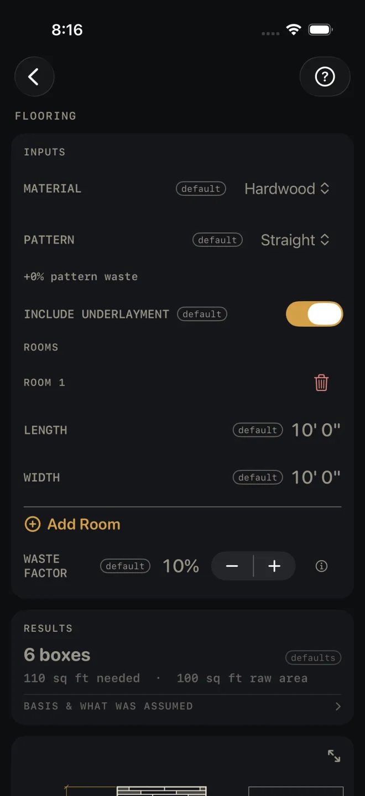
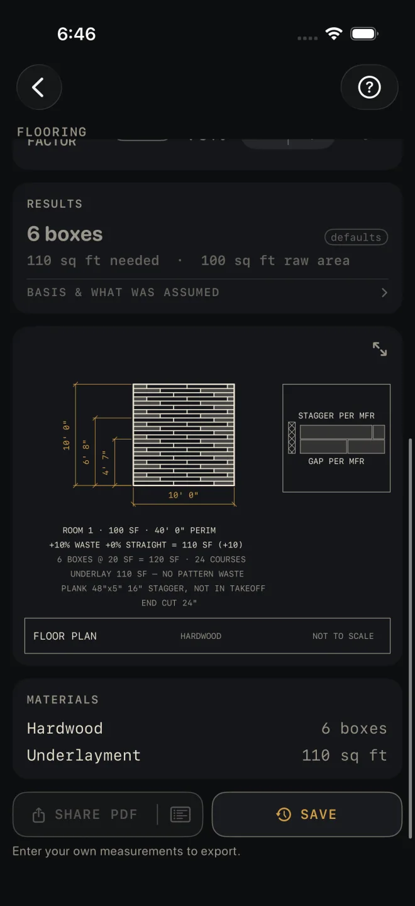

Flooring
What it's for
Ordering a floor: plank by the box, tile by the piece with thinset and grout, or carpet by the square yard. You list the rooms, pick the material and the pattern, and walk away with the quantity to buy, a material list and a floor plan of the first room. It is an order quantity, not a code check.
Step by step
The example is the screen as it opens: one 10' by 10' room in hardwood, laid straight, with underlayment.

1 2 3 4 6- MATERIAL — tap to pick from Hardwood, Engineered, Laminate, Vinyl Plank, Porcelain Tile, Ceramic Tile, Natural Stone or Carpet. The inputs below change to suit. Leave it at Hardwood.
- PATTERN — Straight, Diagonal, Herringbone or Random Width. The line under it shows the extra waste that pattern adds on top of your own waste factor. Straight reads +0% pattern waste.
- INCLUDE UNDERLAYMENT — shown for the four plank materials. On adds underlayment to the material list.
- Under ROOMS, measure the floor wall to wall for LENGTH (10' 0") and WIDTH (10' 0"). Break an L-shaped room into two rectangles and enter each as its own room.
- Tap Add Room for each further room. The trash can removes one.
- WASTE FACTOR — the extra for end cuts and culls, in steps of 5%. It opens at 10%.
- Read RESULTS: 6 boxes, 110 sq ft needed, 100 sq ft raw area.
- Tap BASIS & WHAT WAS ASSUMED to see what the underlayment figure covers.
- Check the floor plan under the results.
- Read MATERIALS — Hardwood 6 boxes, Underlayment 110 sq ft — then save or share the job.

7 8 9 10Tile
Pick one of the three tile materials and a TILE block appears: TILE WIDTH and TILE LENGTH are the face of one tile, and GROUT JOINT is the joint you will set, from 1/16" to 3/8". The underlayment switch goes away. The headline becomes a tile count, and a line for thinset bags and grout bags is added. A wider joint buys more grout.
Random width plank
Pick a plank material and the Random Width pattern and a WIDTH MIX block appears below the rooms. Each WIDTH ENTRY has a plank WIDTH and a MIX SHARE, the percentage of the floor laid in that width. Add Width adds another. The line Mix total under the block shows what the shares add up to. The results then list each width with its square feet, lineal feet and boxes.
Carpet
Carpet has no tile or underlayment inputs. The headline is in square yards, and the material list adds carpet pad and tack strip.
Reading the results
The headline is what you buy: boxes for plank, tiles for tile, sq yd for carpet. It also shows in a strip under the title whenever the results card is scrolled off screen.
Needed and raw area. Raw area is the rooms as measured. Needed is raw area plus your waste factor plus the pattern's waste. The drawing shows the sum: +10% WASTE +0% STRAIGHT = 110 SF, then 6 BOXES @ 20 SF = 120 SF. The box size printed there is what the count is based on. Check it against the carton you are buying, because box sizes vary by product.
The width mix check appears only for random width plank. Green reads Width mix totals 100 %. WIDTH MIX TOTALS 90 % — ADJUST TO 100 %, with your own total in it, means the shares do not add up, so the per-width rows will not add up to the material needed either. The calculator does not rescale them for you. Fix it by changing a MIX SHARE until the mix total reads 100%.
BASIS & WHAT WAS ASSUMED opens one line when you are buying thinset or underlayment. It says those cover the floor area plus your waste factor, and that the pattern allowance is cut waste, so it is added to the tile or plank count only. The drawing says the same: UNDERLAY 110 SF — NO PATTERN WASTE.
The drawing is a plan of room 1 with the flooring laid on it, and a detail reading STAGGER PER MFR and GAP PER MFR — the stagger and the expansion gap are the manufacturer's call, not the calculator's. The plank shown is there to draw the layout; the note says it is NOT IN TAKEOFF. Pinch to zoom, or tap the expand button at the top right to open it full screen. See Reading the drawing.
SHARE PDF sends a sheet with the drawing, your inputs and the material list. The list button beside it sends the material list alone. SAVE puts the job in History. SHARE PDF and the list button stay dim until you change at least one input. SAVE stays lit, but while every input is still a default a tap only answers Enter your job's numbers first and saves nothing.
Common mistakes
- Adding the pattern's waste into WASTE FACTOR yourself. The pattern line is already added on top, so a diagonal or herringbone floor would be padded twice.
- Trusting the box count without checking the carton. The count uses the box size printed in the drawing notes.
- Letting the width mix drift off 100%. The Mix total line and the results check both turn red, but nothing is rescaled.
- Entering a room with a closet or a bay as one rectangle. Add the closet as its own room.
Related
- Plywood — the subfloor under it
- Floor Joist
- Trim — base and shoe once the floor is down
- Cut sheets and 1:1 templates
- Saving and History
- Reading the drawing